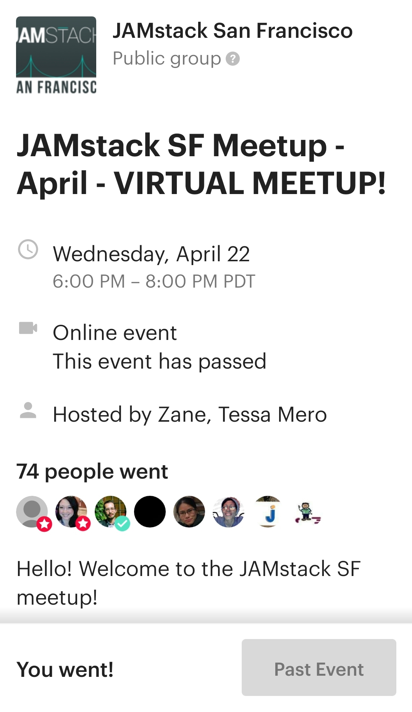

Meetup Report
JAMstack
The objective of the JAMstack
organization and regional chapters is to share knowledge related to the JAMstack philosophy. Speakers share knowledge related to static site generation, the modern web ecosystem, web apps, web hosting, and performance solutions.
The JAMstack philosophy embraces:
- J:JavaScript- Dynamic functionalities are handled by JavaScript. There is no restriction on which framework or library you must use.
- A:APIs- Server side operations are abstracted into reusable APIs and accessed over HTTPS with JavaScript. These can be third party services or your custom function.
- M:Markup- Websites are served as static HTML files. These can be generated from source files, such as Markdown, using a Static Site Generator.
JAMstack SF Chapter
The JAMstack San Francisco chapter hosts monthly meetups at tech companies throughout the city.
Due to COVID, all meetups are currently virtual.
April 2020 Virtual Meetup
Speakers and Topics:
- Bryan Robinson, "The DIY Web: Where we came from; what we’ve lost; where we can go".
- Synopsis: The speaker's presentation focused on the early days of the Internet and how bringing back the original DIY attitude of the early days aligns with the JAMstack movement.Of note is how commercialized the web has become, but that we've lost a lot personal projects and apps that were part of the early web. One example is the fanpages in the 90s that people created for movies, music groups, and shows. The speaker argues that we should start making web projects for ourselves and encourage others. There exist many free to low-cost resources on the web, and you can learn almost anything online these days. Some suggestions are creating a simple web app, a blog, or even your own site. Teaching others is another aspect of bringing back the DIY web spirit. Overall this was a great presentation about the early days of the web. The speaker also shared informative links to get started with building your own web brand.
My attendance pic:

Home